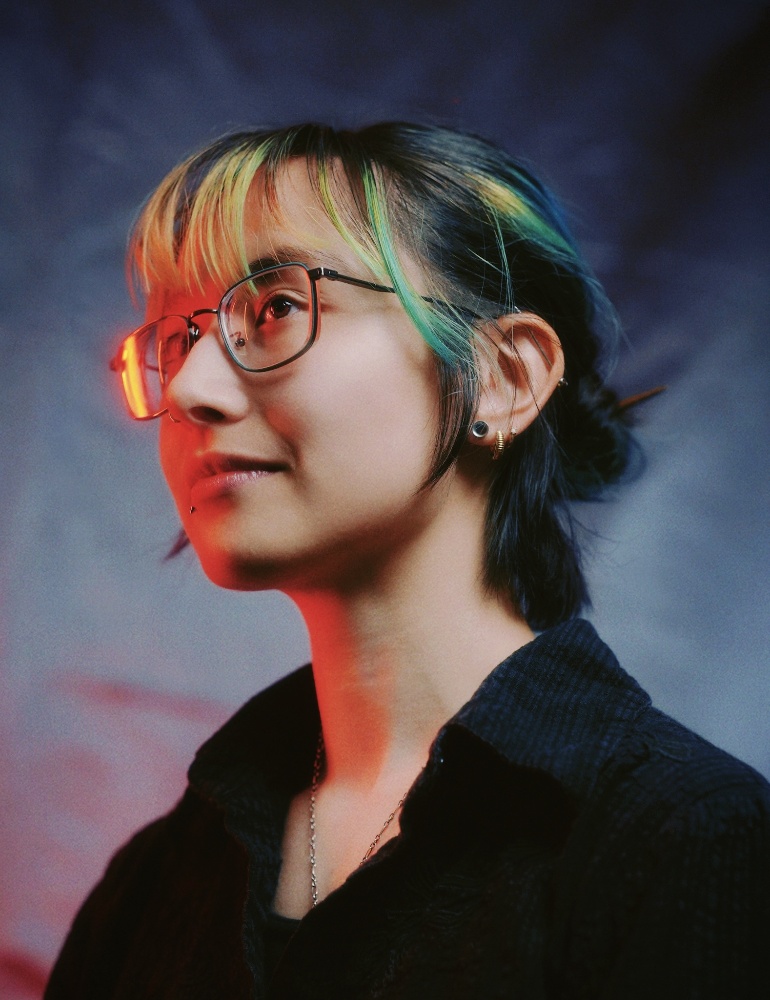

Hello
I am Wraven Watanabe. Visual polymath, animal lover, funky person. Welcome.
I invite you through my eyeballs and into my brain to see how I see.
-7.75 vision in a psychedelic world full of pain, beauty, and wonder.
About
Wraven Watanabe is a visual artist currently based in Tokyo, Japan. Their art heavily embraces the making and breaking of patterns, especially through color, repetition and symmetry. This process often reveals unexpected themes, helping Wraven to better understand their own thoughts and feelings.
Wraven studied undergraduate data science and mathematics for four and a half years at Northeastern University. In their final semester of studies, confronted with deep personal and family crisis, Wraven acknowledged the sunk cost fallacy of staying, and departed without a degree.
